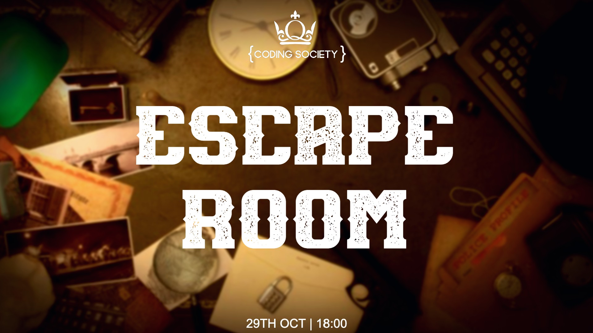
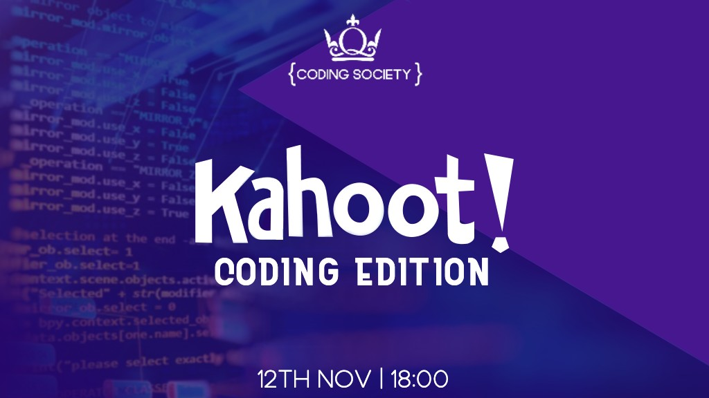
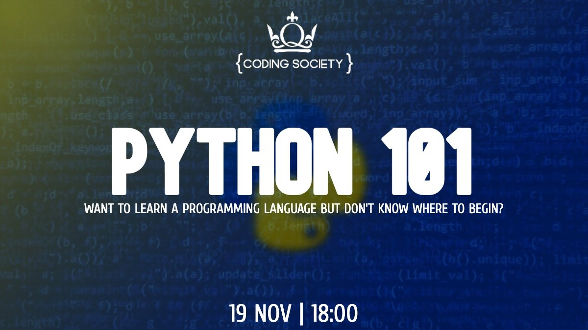

Technology Summer Internship
Content. Content. Content. Content. Content. Content. Content. Content. Content. Content. Content. Content. Content. Content. Content. Content. Content. Content. Content. Content. Content. Content. Content. Content. Content. Content. Content. Content. Content. Content. Content. Content. Content.
London Stock Exchange
2021 Summer
ml proects - neural network - prediction model and yeah yeah yeah
2022 Summer
un deux trois
Coding Society
Sep 2020
Carousel of events I've hosted
Upon restarting university and having an interest in coding, I was looking for opportunities to develop my coding skills, I decided to start the Coding Society.
The Queen Mary Coding Society is here to create a community of coders and computer programmers within the university. Programming has a wide range of applications and we aim to explore some of them through exciting social and educational events, including bi-annual hackathons. We understand that learning to code is like learning a new language; it requires patience and has to be practiced often in order to develop and become fluent. Because of this, we send weekly resources to our members to enable their development and have created a ‘student Stack Overflow’ within our WhatsApp group chat i.e., a student community where everyone has the opportunity to share their knowledge. I decided to start the Queen Mary Coding Society in the midst of the pandemic in 2020. I understood the importance of community and decided to use it as a tool to bring people together, since students were experiencing the same problem of having limited social interactions. There were 3 main aims of the society which were all met within the first 3 months: create a community of coders within the university where there will be educational and social events, enable members with all levels of experience to develop their skills, and demonstrate the opportunities existing within the technology industry. In setting 3 tangible, clear aims when the society was founded, it helped to set the direction and plan events to work towards achieving the aims. In the 21/22 academic year, I decided to continue the same goals which we had in the previous academic year, but to pass it on to the new committee. As a result of it, we’ve had many success stories including a member completing a summer internship and obtaining a technology grad job at LSEG, and people developing a new-found interest in coding. Today, there are 60 paid members in this academic year, and 221 members in the WhatsApp group chat where students use it as a “student stackoverflow”, a place where everyone can find the answers to their coding peoplems, where they can’t find it on Google.
-

-

- 
-

- 
- 
-

-

#100DaysOfCode
Oct 2019
Content. Content. Content. Content. Content. Content. Content. Content. Content. Content. Content. Content. Content. Content. Content. Content. Content. Content. Content. Content. Content. Content. Content. Content. Content. Content. Content. Content. Content. Content. Content. Content. Content.

CodeFirst: Girls' web development courses was where I had my first introduction into the tech industry. I build a basic static site using HTML, CSS and some minor JavaScript, and later went on to integrate an API using Python.
100daysofcode
- cfg = intro into industry
- cfg annual conference - eyes opened
- started 100 days of code
Personal goals: 1..., 2..., 3... .
What I did to achieve the goals
went to tech events, networked within the community, build my skills
html, css, python, js, daily coding challenges
Lessons learnt:
1. Developing a skill require a lot of time to be invested in it
2. Breaks are necessary otherwise learning is counterproductive
3. Opportunities are out there - create them if you can't find them
Highlight